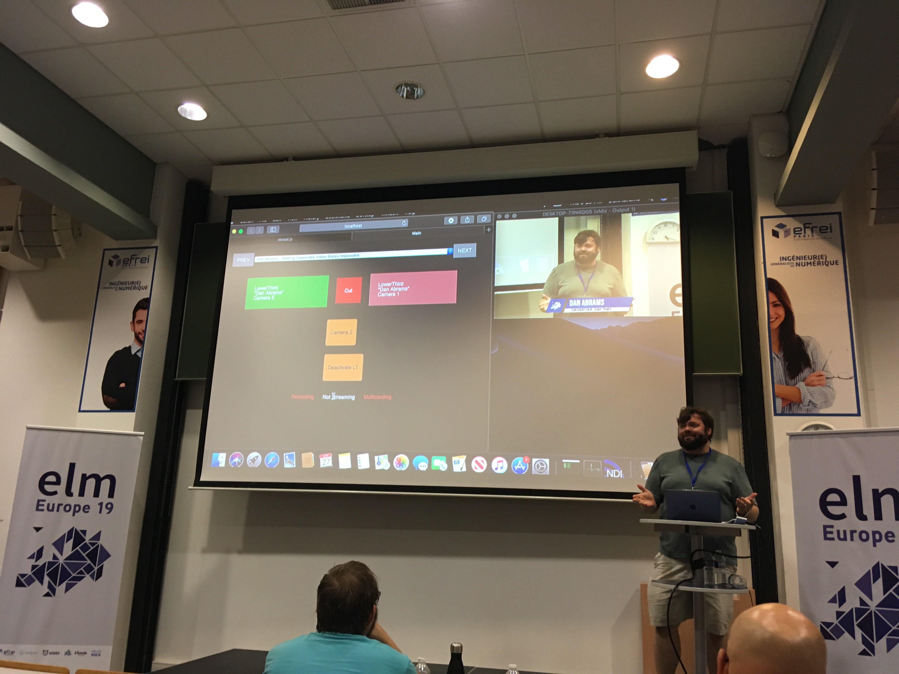

- I'm Théophile Kalumbu
- Functional programming enthusiast
- Attending Elm-Europe since 2017

What ? When ? Where ?
- A conference dedicated to Elm
- Was held on June 27-28th 2019
- At EFREI school in Paris ( Villejuif )
Who ?
Richard Feldman, Joël Quenneville, @Kalabibishkis etc...
Beginners, Student(s), Designer(s) etc...
Keynotes
Custom Types everywhere

Richard Feldman
What if elm's only feature was
algebraic data types
?
- One of the main language feature
- A killer design tool
- A recuring topic during the conference
- Make impossible state impossible
Elm as a Service
Mario Rogic
Lamdera, a new way of creating
applications
- Which language ? backend ? frontend ? hosting ?
- Write Elm on the Backend and the Frontend
- Great for prototyping
- No more headache with hosting, deployment etc..
- https://github.com/Lamdera
Feedbacks
The biggest Elm app in Japan
Seiya Izumi
- 50K loc of Elm
- 7 frontend engineers
- Elm bootcamps for beginners onboarding
- Cultivates Engineers & pushes code quality
Elm side effects:
how adopting Elm modified our state
Diane Manière
- Elm as a success story in a startup
- 100% Styled-elements / No More CSS
- Functional Style on the Backend
- https://www.mybrocante.fr/
From experiment to production:
stories of Elm at Veepee
Radwane Hassen & Benoît Chiquet
- Elm as a learning tool
- Pair programming
- Code generation between Haskell/Node & Elm
Gaming
Gamedev in elm
From Zero to Game Jam
Joel Quenneville
- Join a Game Jam (kind of a Hackathon)
- Limit your ambitions & set a goal
- It's Ok to hardcode, think MVP
- When stuck draw to viziualize the problem
- https://itch.io/
Is performance enough in Elm
to create full fledged video games

Romāns Potašovs ( @Kalabibishkis )
- It's possible to make 60fps games with Elm
- Entity Component System
- Tips and Tricks to prevent useless rendering
- Usage of Elm WebGL and Custom Elements
Building a Music Learning Game with
Elm Web MIDI, and SVG Animation

Liz krane
- First experience in functional programming
- Learning sight reading & Elm
And other cool stuffs
Fighting the Laws of Physics with Elm
Andrey Kuzmin
https://github.com/w0rm/elm-physics
Designing with Elm
Jono Mallanyk
https://jono.co/
Making Impossible Video States Impossible
Dan Abrams
Conclusion
- Small Startup use Elm
- Big companies too !
- Custom Types are Great !
- Gaming is accessible with Elm !
- Designers start to show interest